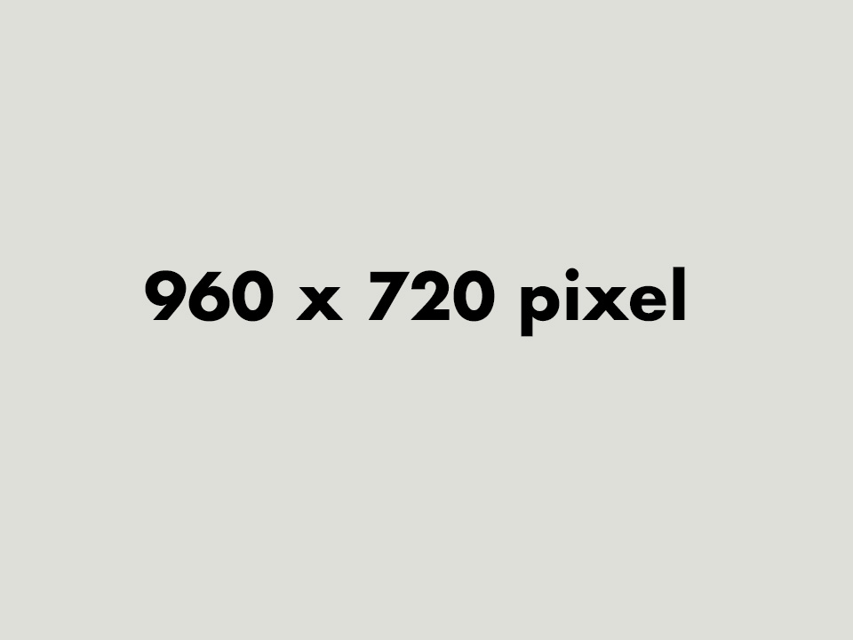
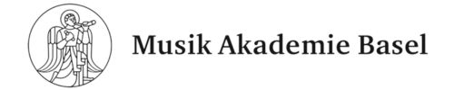

Gamified Proceedings
Experience the Intersection of Art and Play: Dive into a Network of Performances, Music and Presentations from the "SPIEL! Games as a Critical Practice" Festival.

Initial Situation/Problem statement
The University for music of FHNW in Basel held an event called "SPIEL! games as critical practice" in January of 2023. The 4 day event held many different performances like lectures, concerts, vernissages and discussions. The Event was a highlight for the University and there was a lot of educational content created at the event. These proceedings were in the hand of a few people and the broader public didn't have a way to access it.
Project Goal
Our goal was to create a web based archive to provide all the content from the event SPIEL! games as critical practice, in one public place. The second objective was to build a gamified way to showcase the connection between the proceedings from the event. The client had no specific way for the representation of the interconnectivity in mind, so we had to become creative.
Intro Screen

This intro screen gives the user a short description of the site before diving into the 3D connection space of the site.
Explore

The explore section showcases a 3D node cloud with all topic, events and people from the event. The user can zoom in and out, navigate throught the 3D world and jump to any detail page with just a click.
Events

Each event has its own page, which displays in a beautiful way the title, description, date and time, place, images and videos. Additionally you have PDF files to download and an interactive node cloud to showcase the interconnectivity.
People

There is a people overview with all the key people that took part at the event. You can then navigate on each and find some more details like a picture, description, keyworkds and also an interactive 3D connection panel.
Timeline

The timeline gives a nice overview of a timeline of all the events in a timely order and all their connections. You can navigate through them from one to the other or just navigate throught the 3D world itself.
Search function
There is an implemented search function which lets you find direct information easily by searching for people and events.
Developed Solution and its Benefit
criticalgames.ch is a thoughtfully designed web application that presents the proceedings from the "SPIEL! Games as a Critical Practice" festival in an engaging, gamified format. Users can explore a diverse collection of videos, audio recordings, and informative text from many of the festival's performances, including lectures, concerts, and discussions. The platform introduces an innovative navigation system, displaying an interconnected graph of events, speakers, and organizers, which allows users to explore the connections between the festival's various sessions and topics.
This approach offers a unique, interactive way to engage with the festival's content, transforming it from a series of isolated events into a dynamic, interconnected experience. The web application not only preserves the content for future audiences but also provides a valuable resource for researchers, students, and anyone interested in critical perspectives on games as a cultural practice.
Functionalities:
- Interactive Event Graph
Navigate through a 3D graph that visualizes the relationships between events, speakers, and participants, helping users understand the interconnectivity of the festival's proceedings. - Dynamic Search Function
Quickly find content based on event, speaker, or topic using an intuitive, quick to access search bar. - In-Depth Event Exploration
Delve deeper into each event with detailed pages featuring videos, images, descriptions, and interactive elements that highlight their connections to other performances. - Event Timeline
Experience the fesitival immersively. Through the event-timeline it is possible to journey through the events as they were presented at the festival. - People Overview
Discover organizers, performers and musicians that participated at the festival, neatly organized in one place, presenting a wide overview from which to delve deeper.
This platform is designed to facilitate a deeper understanding of the "SPIEL! Games as a Critical Practice" festival, promoting exploration, reflection, and research within a gamified and interconnected environment.
Testemonial
«I experienced the collaboration with the team of students and their coach as very dynamic, innovative and mutually beneficial. The almost one-year development period is worthwhile: in close collaboration, new ideas and possibilities also arise for the client - in my case, the project has helped me not only to publish my research data, but also to structure it sustainably. The students already have their own professional experience and the mix of the team brings together different fields of expertise, technology, data management and design, which has led to a well-rounded and refined end product.»
Michel Roth
Key terms
- UI/UX ToolFigma
- Programming LanguagesTypeScript
- Frontend StackNext.js (React-based framework) with React Three Fiber and Three.js for 3D rendering, Tailwind CSS
- Backend StackSanity CMS with Typescript
- DatabaseSanity CMS
- Deployment PlatformDebian Server, Docker, Docker-Compose
Client

Michel Roth
4052 Basel
Hochschule für Musik Basel
Team
Team (left to right)
Joshua Wyss
Nicolas Ostwald
Tamira Leber
Daniel Barber
Laurin Scheuber
Samuel Lupica
William Cruz
David Lenz
Coach (unfortunatelly not on image)
Gabriela von Wyl